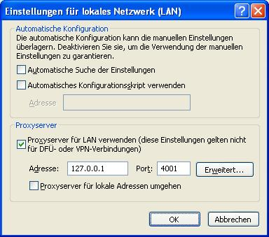

Alternative Browser Inhalt
Alternative Browser Inhalt  Browservorbereitung Alternative Browser Alternative Browser
Browservorbereitung Alternative Browser Alternative Browser Alternative Browser Inhalt
Browservorbereitung Alternative Browser Alternative Browser
JonDos empfiehlt den bereits fertig konfigurierten JonDoFox zum sicheren, anonymen Websurfen. Der Internet Explorer dagegen ist hinsichtlich Anonymität schlecht konfigurierbar. Er erlaubt so gut wie keine Anpassung der HTTP-Header und die Kontrolle über aktive Inhalte ist eingeschränkt, unflexibel und nicht benutzerfreundlich. Wenn Sie Wert auf Ihre Privatsphäre beim Surfen legen, raten wir stark von der Nutzung des Internert Explorers ab.
Um JonDo dennoch im Internet Explorer einzurichten gehen Sie folgendermaßen vor:
Wählen Sie im Menü "Extras" das Untermenü Internetoptionen.... Danach öffnet sich das Einstellungsfenster:

Wählen Sie in diesem Fenster die Dialogseite Verbindungen aus.

Verbindungen:
Modem oder ISDN:
Wenn Sie ein Modem zur Verbindung mit dem Internet benutzen,
wählen Sie unter DFÜ- und VPN-Einstellungen zuerst ihre
Internetverbindung aus und klicken Sie dann auf die Schaltfläche
Einstellungen.
DSL oder direkte Verbindungen mit dem Internet:
Wählen Sie unter LAN-Einstellungen die Schaltfläche
Einstellungen aus.
Aktivieren Sie in dem neu geöffnetem Fenster das Kontrollkästchen Proxyserver für diese Verbindung verwenden bzw. Proxyserver für LAN verwenden und tragen Sie als Proxyserver 127.0.0.1 und als Port 4001 ein:
Hinweis:
Falls Sie im JonDo einen anderen Listenerport
eingestellt haben müssen Sie diesen anstatt 4001 eintragen.
Wollen Sie Adressen festlegen, für die JonDo nicht verwendet werden
soll, so klicken Sie auf die Schaltfläche Erweitert. Im Feld
Ausnahmen können Sie, jeweils durch Semikolon getrennt, die
gewünschten Adressen eingeben.
Alternative Browser Inhalt
Browservorbereitung Alternative Browser Alternative Browser